5.1 Control physical and logical access to assets
5.1.1 Access Control
CORE CONCEPTS |
|
|
|

What is access control?
Access control is the collection of mechanisms that work together to protect the assets of an organization and, at the same time, allow controlled access to authorized subjects.
Access control enables management to:
 Specify which users can access the system
Specify which users can access the system
Specify what resources they can access
Specify what operations they can perform
Provide individual accountability-know who is doing what
Access Control Principles
The fundamental access control principles denoted in Table 5-1 are important to understand because they are applied everywhere within access control. Individually and together, they help protect organizational assets by limiting what individuals can do with an asset in order to perform their job, and nothing more.
|
Need to Know |
Least Privilege |
Separation of Duties |
|
Defending sensitive assets by restricting access to only required personnel who require access |
Defending sensitive assets by granting only the minimum permissions required by the user or system |
Defending sensitive assets by requiring more than one person to complete a task, to prevent errors and fraud |
Table 5-1: Access Control Principles
Understand the fundamental access control principles and how they might be applied
Need to know: The concept of need to know can be applied in many ways. Imagine a law enforcement agent being undercover and investigating a case. Their true identity doesn't need to be known to anyone apart from their direct supervisor and a handful of agents involved in the case. In short, only who needs to know will know to maintain operational security. Need to know simply means that you are given access to an asset that you absolutely need to access, based on your job role, function, or what you've been authorized to do.
Least privilege: A classic example of overprivileged accounts exists in a variety of companies today where several people (if not the whole company) just have local administrator permissions on their machines. This goes against least privilege. Most people in a company don't need to have local administrator permissions, and hence to apply least privilege, a group policy should state that everyone has standard accounts configured, apart from a handful of administrators. Least privilege means you are given only the absolute level of access that you need, and nothing more. If you only need read access, that's all you are given.
Separation of duties and responsibilities: Separation of duties and responsibilities refers to the concept that one person should not be responsible for all aspects of a process. Separation of duties is often employed in areas of an organization where money is received or disbursed. For example, when a new vendor is added to an accounts payable system, one person might enter the vendor information and another person might confirm the validity or accuracy of the information. These two steps can help prevent fake vendors from being created in a system. In addition, when the vendor is paid, one person might enter the invoice and payment information, another person might generate the check, and yet another actually confirms the check amount against the invoice and then signs it. Another example relates to developers, they should not be the same people who push applications to production. There needs to be a separation of duties in place, so proper testing, validation, and approval can be conducted to prevent errors. Separation of duties helps prevent fraud.
Access Control Applicability
Access control includes all aspects and levels of an organization and covers all types of assets including:
Facilities
Systems/Devices
Information
Personnel
Applications
Access Control System
The focus of access control is controlling a subject's access to an object through some form of mediation.
Mediation is based upon a set of rules.
All activity is logged and monitored to provide accountability and gain assurance that things are working properly.
Fundamentally, the above point to the use of the RMC, or Reference Monitor Concept, where some type of rules-based decision-making tool is placed in between subjects and objects to mediate access, and all activity is logged and monitored for the sake of accountability and assurance. Any implementation of the RMC is known as a security kernel. Figure 5-1 depicts the RMC and its various components.
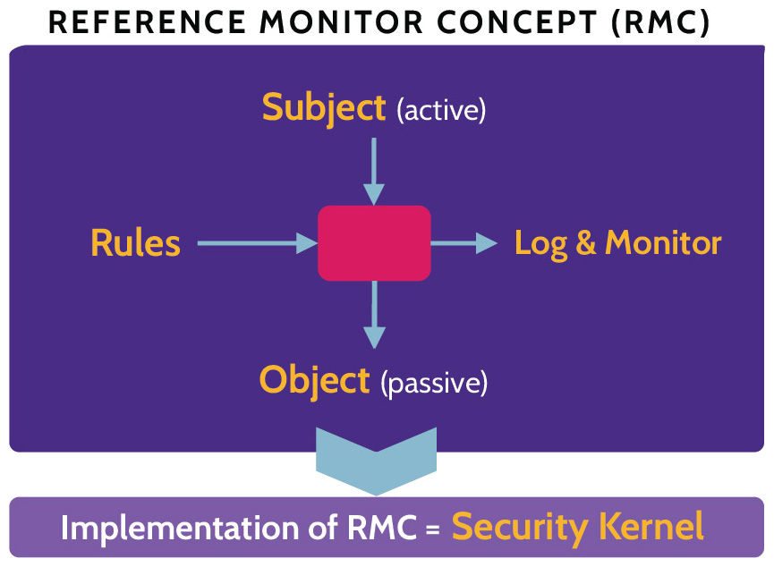
Figure 5-1: RMC Components
Logical Access Modes
Access control is more granular than simply allowing subjects to access objects.
Access control rules allow the access control mechanism to be much more granular.
Specific access rules allow precision with regards to what subjects can access what objects and exactly what those subjects can do with those objects.
Access should be based on the use of concepts like need to know and least privilege.
Access rules and related subject rights will vary from system to system, but in general, the following logical access modes can be found in most systems:
Create
Update
Read
Read/Write
Execute
Delete
Groups versus Roles
Groups and roles are essentially just two different approaches for assigning permissions to users. The differences are outlined in Table 5-2.
|
Groups |
Roles |
|
A collection of users that has been named. The users are generally not associated with a specific job in the organization. Instead, they could be part of a specific internal leadership team or focus area. As an example, they could be specific members of a business continuity management team. |
A set of permissions that is usually associated with a specific job within an organization, such as a call center agent. |
|
An admin can create groups of users and then assign permissions to the group, which can make it simpler to manage many users at once. |
If a user is assigned to role, they are given the permissions of that role. |
|
Groups are more flexible. |
Roles are focused around the function of the job, the actions that must be performed, and therefore the permissions that are required to do the job. |
Table 5-2: The Differences Between Groups and Roles.
5.1.2 Administration Approaches
CORE CONCEPTS |
|
|
Understand access control administration approaches and pros and cons of each approach
Access Control Administration Approaches
When administering access control, two primary approaches are often taken: centralized or decentralized, although more organizations are now also utilizing a hybrid approach that incorporates elements of centralized and decentralized approaches. These are depicted in Table 5-3.
|
Centralized |
Hybrid |
Decentralized |
|
|
|
|
Table 5-3: Centralized, Decentralized, and Hybrid Access Control
Centralized Administration
Some advantages of a centralized approach are much easier administration, lower overhead, cost reduction, and greater flexibility. However, a major disadvantage is that the central administrative point represents a single point of failure as well as target of attack.
Decentralized Administration
Likewise, an advantage of a decentralized approach is the ability to manage access control at much more granular levels, though a corresponding disadvantage is that this ability creates much more administrative overhead. Another advantage is that decentralized administration of access control minimizes the risks associated with a single point of failure, as found with centralized administration. If one system goes down or is compromised, other systems remain viable.
5.2 Design identification and authentication strategy (e.g., people, devices, and services)
The Seven Laws of Identity
The seven laws of identity were developed by Kim Cameron and a range of other security experts. They are described in Table 5-4.
|
User control and consent |
Identity systems should be designed so that information identifying a user is only revealed with the consent of the user. |
|
Minimal disclosure and constrained use |
The most stable long-term identity solution is the one that reveals the least amount of identifying information and limits the use of this data. |
|
Justifiable parties |
Identity solutions should be designed to only disclose identifying information to parties that have a justifiable and necessary reason to be part of the identity relationship. |
|
Directed identity |
Identity systems should support omni-directional identifiers for public entities, as well as uni-directional identifiers for private entities. As an example, a public website should have omni-directional identifiers so that users can easily find and connect to it. These users should have uni-directional identifiers so that they can connect to the website while preserving their privacy from other parties. |
|
Pluralism of operators and technologies |
Universal identity systems should be interoperable with a range of identity providers and technologies. |
|
Human integration |
Identity systems must be designed under the consideration that human users are a vital component. They must be integrated into the system, with protections in place to also guard the communications between the human and the system itself. Identity systems need to ensure that the communication between the users and the system is extremely reliable. |
|
Consistent experience across contexts |
The identity system must provide users with a consistent and simple experience, even when they use different identity providers and technologies. |
Table 5-4: The Seven Laws of Identity.
5.2.1 Access Control Services
CORE CONCEPTS |
|
|
|
|
|
|
Access control and related services are fundamental elements of organizational security. Assets and users can best be protected and held accountable for their actions. In fact, this latter point-the notion of accountability-is the fundamental driver behind Access Control Services. As a security professional, it's imperative to understand the implications of nonexistent or weak and ineffective access control, especially as it relates to the Principle of Access Control.
The components of Access Control Services are depicted in Figure 5-2 and explained in detail in the following section. These are Identification, Authentication, Authorization and Accountability. Sometimes, we refer to these last three processes as AAA.
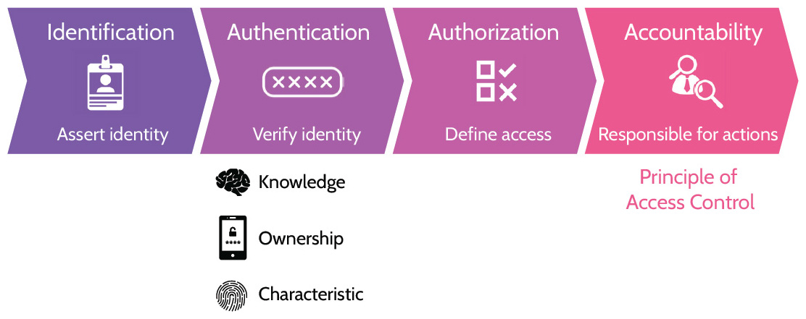
Figure 5-2: Access Controls Services Components
5.2.2 Identification
CORE CONCEPTS |
|
|
Identification as the first component of Access Control Services, identification methods and guidelines
The notion of identification is simple: To gain access to a system, a unique identity should be presented, which can then be used to trace activity to an individual. Shared user accounts potentially allow circumvention of the Principle of Access Control and therefore should not be used.
A few examples of identification methods include a user's ID (for example, first name, last name, both, etc.), account ID, access card, biometrics.
User identification needs to be
Unique (relating to one individual or process)
Nondescriptive of role (e.g., admin accounts should not include the word "admin," or finance-related user accounts should not point to a role or job related to the same)
Issued and used securely (e.g., use a password manager to generate and store user passwords rather than writing them down to a notepad)
As it pertains to authentication, there are three factors of authentication that can be used to verify a user's identity, which are summarized in Table 5-5.
|
Authentication by Knowledge |
Authentication by Ownership |
Authentication by Characteristic |
|
Something you know |
Something you have |
How you behave or your physiology; something you are |
Table 5-5: Factors of Authentication
5.2.3 Authentication by Knowledge
CORE CONCEPTS |
|
Authentication by knowledge as one type of authentication
Authentication by knowledge, or also known as something you know, simply means that a person uses a password, a passphrase, or a response to one or more security questions to authenticate to a system. A password could be as simple as "password" or something more complex, like "m{BLB9FF#6h`J#U$." Complex passwords aren't easy to remember, which is why many people write down their passwords on sticky notes and place them under their keyboard or on their monitor. A passphrase is typically as complex as the password example and much easier to remember. The thinking here is that a sentence or lyric from a song or book can be used to authenticate. A phrase is longer and can be as or more complex than a standard password. Finally, one or more security questions can be presented to a user, and upon answering them correctly the user is authenticated. The questions are usually chosen by the user, and the corresponding correct answers should be details that only the user knows. These are often known as cognitive questions. In addition, note that answers to these questions don't have to be true. For example, if a question asks, "What's your maiden name?" you can still answer "3487487glkjgokjo!(*&" (good luck pronouncing that!), but the point is that the answer doesn't have to be true. This makes security questions impossible to guess from an attacker's point of view.
Different forms of authentication by knowledge
Ideally, whether a password, passphrase, or questions are used, each should be unique to the user and not easily guessed or otherwise determined.
5.2.4 Authentication by Ownership
CORE CONCEPTS |
|
|
|
|
|
|
Authentication by ownership as another type of authentication
One-Time Passwords (OTP) are exactly what the term says, they are passwords that can be used one time. Additionally, one-time passwords are dynamic in that they expire after being used, or they expire after a certain period of time. One-time passwords can be generated via a soft token, a software app (like Google's Authenticator app), or they can be generated via a hard token, a dedicated hardware device (like RSA's SecureID device).
Understand the difference between asynchronous and synchronous password generation
One-time passwords can be generated via an asynchronous or synchronous process as depicted in Figure 5-3. Of the two processes, asynchronous is much less common, as it involves a fair amount of complexity with regards to the synchronization elements involved between the authorization server and the user and system they're accessing. This complexity often comes with a hefty price tag, though it does offer a more robust layer of security. Relative to the asynchronous process, the synchronous one-time password authorization process is much more straightforward and less complex.
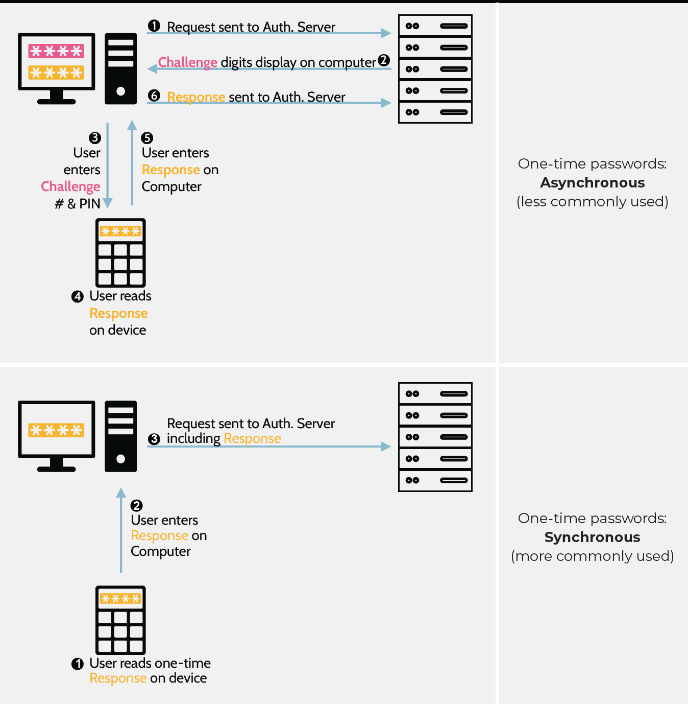
Figure 5-3: Synchronous and Asynchronous One-Time Passwords
Smart/Memory Cards
Understand the differences between smart and memory cards
Both smart and memory cards consist of an authentication factor by ownership, as you have a smart or memory card in your possession. Both cards store information about the card holder. Smart and memory cards are summarized in Table 5-6.
|
Smart Card |
Memory Card |
|
Called smart cards because they contain a small embedded integrated circuit (IC) chip that can perform calculations and generate unique authentication data with each transaction. |
Implies a form of memory stored on a card, typically on a magnetic strip on the back of the card. The same data is read from the magnetic strip with every transaction. |
Table 5-6: Smart and Memory Cards
A memory card will have a magnetic stripe on the back of the card, which is where the information is stored. Older cards were typically just memory cards, and this fact led to widespread growth of credit card fraud-specifically skimming (covered in 3.9.11). Newer cards (especially modern debit and credit cards) tend to be a combination of smart and memory card as they contain a chip (smart) and a magnetic strip (memory). The chip in smart cards can act as a processing engine for them to accept, store, and send information as they communicate with a card reader.
There are two main methods that smart cards can communicate with a reader as noted in Table 5-7.
|
Contact Smart Cards |
Contactless Smart Cards |
|
The chip in the card needs to contact the reader for the chip to be powered and allow transactions to be processed. |
The reader sends out signals that are powerful enough to communicate with and power the chip in a smart card, allowing it to perform some calculations and wirelessly send a response to the reader. |
Table 5-7: Smart Cards' Communication Methods
5.2.5 Authentication by Characteristics
CORE CONCEPTS |
|
|
|
|
The various physiological and behavioral authentication types are shown in Table 5-8. Remember that physiological relates to the physical attributes of a person, while behavioral relates to how a person behaves.
|
Physiological Characteristics |
Behavioral Characteristics |
|
fingerprints hand geometry facial features eyes (retina and iris) |
the way a person writes the way a person walks-their gait the way a person speaks-their voice the way a person types-keyboard dynamics |
Table 5-8: Physiological and Behavioral Authentication Types
Biometric Device Considerations
Due to the nature of how biometric authentication works, factors like the ones noted below must be considered:
Processing Speed
User Acceptance
Protection of Biometric Data
Accuracy
Biometric systems can be much slower than other types of authentication systems. Because of this fact, users may be less willing to accept the implementation and use of biometric authentication, and because of the inherent uniqueness of biometric data, its protection is of paramount importance. Finally, the accuracy of biometric systems must be carefully considered.
Biometric Device Accuracy/Types of Errors
Biometric error types and which is worse
Unlike other types of authentication systems, biometric systems are not 100% binary. In other words, they're not always 100% accurate. With a traditional username/password authentication system, for example, the username and password must be 100% correct for a user to be authenticated to a system. The same cannot be said of a system that uses physiological or behavioral attributes for authentication.
When considering biometric systems and their accuracy, two primary types of errors need to be understood as summarized in Table 5-9.
|
Type 1-False Rejection |
Type 2-False Acceptance |
|
This is when a valid user is falsely rejected by the system. The false rejection rate (FRR) is the probability that a valid user will be rejected by the system. It is expressed as a percentage. |
This is when an invalid user is given access to a system. It is a much more serious and potentially dangerous situation. The false acceptance rate (FRR) is the probability that an invalid user will be accepted by the system. It is expressed as a percentage |
Table 5-9: Metrics for Biometric Systems Accuracy
With Type 1 errors, the result is usually just frustrated users that can't authenticate to the system. However, with Type 2 errors, a malicious individual could gain access to the environment, as the tool falsely thinks they are legitimate. Hence, Type 2 errors are much more dangerous than Type 1 errors. Also note the terms False Rejection Rate (FRR), which expresses the Type 1 error rate, and False Acceptance Rate (FAR), which expresses the Type 2 error rate.
An interesting feature of biometric systems is that these error rates are inverse to one another, which relates to the system's tuning. In other words, by tuning a system and reducing Type 2 errors, Type 1 errors tend to increase. On the other hand, by reducing Type 1 errors, Type 2 errors will increase. This inverse relationship is depicted in Figure 5-4.
Crossover Error Rate (CER)
Crossover error rate and what it represents
As Figure 5-4 depicts, when Type 1 (false reject errors) are low, Type 2 (false accept errors are high) and vice versa. The intersection of the two error plots is what's known as the Crossover Error Rate (CER). The crossover error rate is a useful metric for biometric systems, because it's a way to measure the overall accuracy of the system. No system is going to have a CER of zero, but a number closer to zero means the system is more accurate. CER is often used when looking for and comparing biometric systems and their functionality and effectiveness.
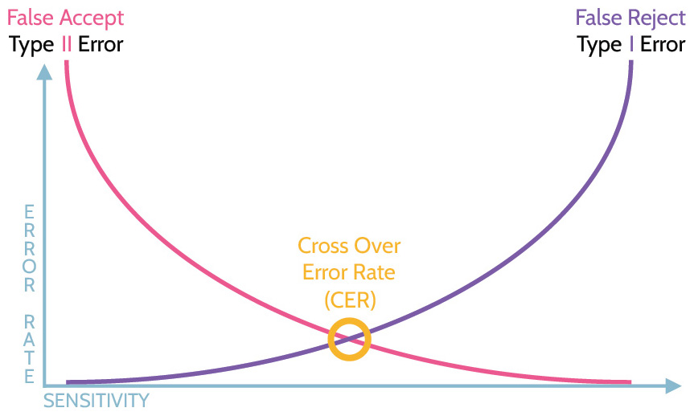
Figure 5-4: FAR, FRR, and CER
Biometric Templates
As noted above, the protection of biometric data is extremely important. If someone's biometric data is exposed, the consequences are much more severe than, for example, their password being exposed. The reason is obvious: if someone's password is exposed, they can just change their password and memorize the new password. However, if their biometric data is exposed, they can't just grow a new finger or a new eyeball.
Accordingly, raw, or original biometric data should never be stored, such as a simple picture of a fingerprint. Instead, good biometric systems will use one-way mathematical functions to create a representation of the features or characteristics from the source data - this digital representation is called a template. A template is essentially a digital representation of someone's unique biometric features.
Templates can be used in two major ways as summarized in Table 5-10.
|
1 : N for Identification |
1 : 1 for Authentication |
|
Imagine someone walks up to a locked door and places their finger on a biometric scanner to unlock the door. The scanner has no idea who this person is before they place their finger on the scanner. The scanner is capturing the person's biometric data, generating a new template, and then searching through a database of existing templates to try to find a reasonably close match to identify the person. A 1 : N scan of biometric templates is used for identification |
Imagine a user logs into their laptop by typing in their username and password. As a second factor of authentication, the laptop then asks the user to place their finger on the built-in biometric scanner. The scanner will capture the user's biometric data, generate a template, and because the user has already been identified with their username, the system will look up the user's existing template in a database and compare the user's existing template to the newly generated template. If the templates reasonably match, then the user is authenticated. A 1 : 1 comparison of biometric templates is used for authentication |
Table 5-10: Uses of Biometric Templates
Biometric Devices
As can be seen in Table 5-11, biometric devices vary and focus on different characteristics.
|
Physiological |
Fingerprint |
Fingerprint scanners examine a fingerprint. These are common, especially on devices like computers and mobile phones, and they're reasonably accurate. They're also often used at border crossings, for example, between the United States and Canada. |
|
Hand geometry |
Hand geometry scanners are rarely used, but often portrayed in movies. The scanning device could be a small machine, with an outline of a hand and guideposts that help position the hand and fingers for scanning; or, the device could be a futuristic-looking screen upon which a user places his or her hand, and the geometry is read. Some devices scan the ridges of the hand, while others examine the geometry. |
|
|
Vascular pattern |
Vascular pattern scanners examine veins in a hand and are often used in testing centers, like the ones where CISSP and other exams are administered. The scan allows biometric information of the exam candidate to be captured prior to the exam, and if a break or visit to the restroom is needed, the hand can be rescanned and the results compared to the original. This ensures that the exam candidate remains the test taker, and not somebody else. |
|
|
Facial |
Facial scanners examine an individual's facial features and pattern. |
|
|
Iris |
Iris scanners examine the colored ring around an individual's eye. |
|
|
Retina |
While iris scanners examine the colored ring around an eye, retina scanners look at the back of the eye and specifically at the vein pattern of the retina. Retina scanners are very accurate; in fact, they're the most accurate type of biometric system. They're also controversial. For one thing, they're invasive, due to the way they operate, and this explains why they're rarely used. In use, an individual has to place their eye to a rubber eye cup, and a bright light is flashed as part of the scan. Most people find this process unpleasant. Additionally, and more to the point of controversy, retina scans can lead to privacy issues, because the results of a retina scan can reveal medical issues related to the individual. |
|
|
Behavioral |
Voice |
How a person speaks. |
|
Signature |
How a person writes. |
|
|
Keystroke |
How a person types on a keyboard. |
|
|
Gait |
How a person walks. |
Table 5-11: Biometric Authentication
Biometric device types and least/most accurate
5.2.6 Factors of Authentication
CORE CONCEPTS |
|
|
|
Refer back to the three types-factors-of authentication:
Authentication by knowledge-something you know
Authentication by ownership-something you have
Authentication by characteristic-something you are (physiological or behavioral)
Understand the difference between singlefactor authentication and multifactor authentication and what constitutes each type
Each of these families on its own can be thought of as a type of single-factor authentication. If an authentication system uses any number of authentication types but all falling within a single factor (e.g., all belong "to something you are"), then single-factor authentication is in place. However, two (or more) of these factor families used in combination can be considered as multifactor authentication (e.g., using any authentication type from "something you are" and another belonging to "something you have"). Single-factor versus multifactor authentication are summarized in Table 5-12.
|
Single-factor Authentication |
Multifactor Authentication |
|
One (1) factor of authentication used by itself |
Two (2) or more different factors used in combination |
Table 5-12: Factors of Authentication
If a user logs in to a system using only an RSA ID key and a Microsoft token, they've authenticated using a single factor. However, if the authentication process involves entering a password and an RSA token, then two factors of authentication have been used, and therefore this would be considered multifactor authentication.
Also, consider this question. If a username/password combination and a challenge question is used, is this single-factor or multifactor authentication? Before you answer, consider what type of authentication each represents. A username/password is authentication by knowledge; likewise, so is a challenge question. So, in fact, even though two authentication objects are utilized, only a single-factor of authentication has been employed (something you know). It's important to understand the different factors of authentication and to be able to distinguish them from each other.
Password-less authentication
CORE CONCEPTS |
|
As the name implies, password-less authentication involves authenticating users without needing them to input a password. Passwords come with a range of issues-entering them can add friction, users can forget passwords and get locked out of their accounts, users may choose weak passwords that can be cracked, or users may fall victim to a phishing attack and have their passwords stolen.
Password-less authentication options can include biometrics, mobile devices owned by the user, or security tokens. One of the major password-less options to emerge in recent years is passkeys, which involves users authenticating themselves by entering their PIN or biometrics into their device. While tools like passkeys can be more convenient to users and are resistant to phishing, they come with their own set of downsides. As discussed in the earlier sections of Domain 5, biometrics have their own flaws. If a user loses their mobile device or their hardware token, they may end up locked out of their account. On top of this, password-less options like hardware tokens have higher implementation costs, due to the cost of the tokens.
5.2.7 Credential Management Systems
Credential management systems allow organizations to effectively manage-at scale-access to assets by ensuring that all personnel, processes, and devices have unique credentials. Credential management systems are designed to manage, grant, and revoke credentials, typically using strong two-factor authentication that incorporates public key infrastructure. Credential management systems include the programs, processes, technologies, and personnel used to create trusted digital identity representations of individuals and nonperson entities (processes) and bind those identities to their credentials.
Password Vaults
CORE CONCEPTS |
|
|
Password vaults, also known as passwords managers, are apps that are designed to generate, store, sync and manage passwords. The passwords are kept in an encrypted database, which is guarded by a master password. The theory behind password vaults stems from the problem that most people can only remember a few passwords at most. This is a significant issue because security best practices involve having strong and unique passwords for every account. With a password vault, users can have strong and unique passwords for the dozens of accounts they might regularly use, without having to know or remember any of them. All they have to do is remember the master password so that they can log in to their password manager whenever they want to sign into an account.
Password vaults can improve security, because they make it more practical for users to create strong and unique passwords for each account, which defends against attacks like credential stuffing. However, they do also present a single point of failure. If an attacker manages to access someone's password vault, the attacker may be able to access all of their accounts unless MFA is in place for each account.
5.2.8 Single Sign-on (SSO)
CORE CONCEPTS |
|
|
|
|
|
Understand the underlying premise and pros and cons of single sign-on
The concept of Single Sign-On (SSO) is best illustrated through an example. From the perspective of a user, single sign-on takes place when the user types in their username and password, or username and Microsoft Authenticator code, for example, and is then authorized to access multiple systems. The user logs in one time and is authorized to access multiple systems.
Users typically love it, and one immediate advantage is they'll be more likely to use one stronger password to log in once versus using a bunch of weaker passwords to access multiple systems.
A big disadvantage of SSO was mentioned in the section about administration approaches. SSO implies centralized administration, and centralized administration represents a single point of failure from both an availability and a confidentiality perspective. If a SSO system is compromised, an attacker potentially has access to everything. Contrarily, if the system goes down, users have access to nothing.
At a high level, the single-sign-on process is depicted in Figure 5-5.
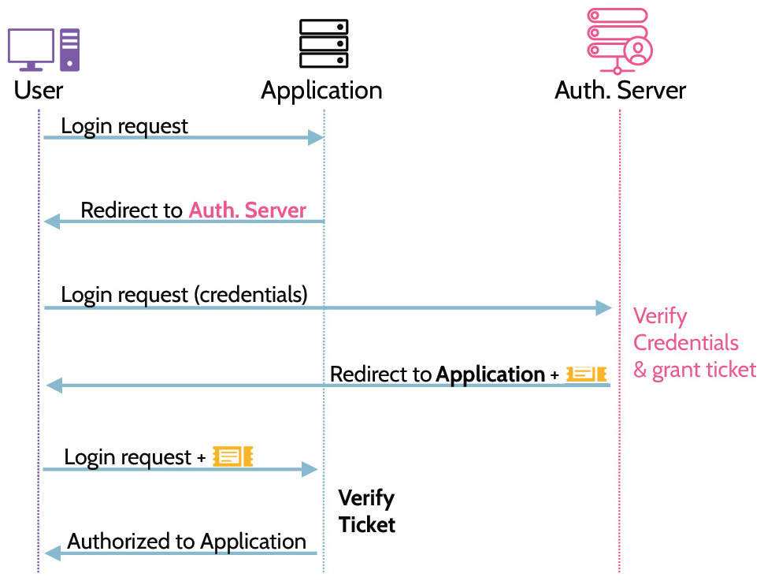
Figure 5-5: Single Sign-On Process
1. A user sends a login request to an application.
2. If the user has not already logged in or authenticated, the application will essentially say, "I don't know who you are right now," and redirect the user back to the authentication server, saying, "You're not currently authenticated, I don't know who you are, you need to go and authenticate."
3. The user will identify themselves to the authentication server and authenticate via knowledge, ownership, or characteristic, or a combination of two or more types. Once authenticated and authorized, the user will be given some type of ticket or token.
4. The user is directed back to the application, and the ticket or token is presented for authorization to the application.
5. If the application grants authorization, the user will be able to access the application.
Pros and Cons of Single Sign-On
The pros and cons of single sign-on are summarized in Table 5-13.
|
Pros |
Cons |
|
|
|
Table 5-13: Pros and Cons of Single Sign-On
Kerberos
Understand how Kerberos works as well as specifi c components of Kerberos
One of the major SSO authentication protocols is known as Kerberos. As a side reference, the name Kerberos stems from Greek Mythology and refers to the three-headed dog, Cerberus, that guarded the gates of Hell. Drawing from the myth, Kerberos protects access to resources and provides three primary functionalities:
Accounting
Authentication
Auditing
Kerberos is an old and complicated protocol, and thankfully you do not need to be an expert on how the protocol works for the exam. Figure 5-6 provides a simplified depiction of the major steps in the Kerberos authentication process. Alice is the client who wants to access a service. If Alice does not currently have a valid ticket, she must first be authenticated by the Kerberos service before she can access the desired service.
Alice, the Client, sends a couple of initial messages to the Kerberos Authentication Service (AS).
The Authentication Service will verify that Alice is a valid user and, if so, will send a few messages back to Alice. One message is encrypted with Alice's password as the encryption key, and another message is the Ticket Granting Ticket (TGT)-a message that Alice cannot decrypt as it is encrypted with the Ticket Granting Service's (TGS) key.
When Alice receives the messages from the authentication service, she decrypts one of the messages with her password as the encryption key. This is the way that Kerberos verifies that the user knows their password without having to send the user's password across the network. If the user knows their password, they can use it to decrypt one of the messages and can therefore proceed with the process. If the user doesn't know their password, they can't decrypt the message and obtain the information they need to proceed.
Assuming Alice knows her password and decrypts the message, she will create a couple of new tickets and send them along with the still encrypted TGT to the Ticket Granting Service.
When the Ticket Granting Service receives the messages from Alice, it performs a number of verification steps, and if everything looks good, it will create some new messages to send back to Alice including the encrypted Service Ticket (encrypted with the service's key).
When Alice receives the messages from the Ticket Granting Service, she creates some new messages and sends them to the Service along with the still encrypted service ticket.
When the service receives the messages from Alice, it does a final few verification steps, and if everything looks good, the service will finally grant Alice access.
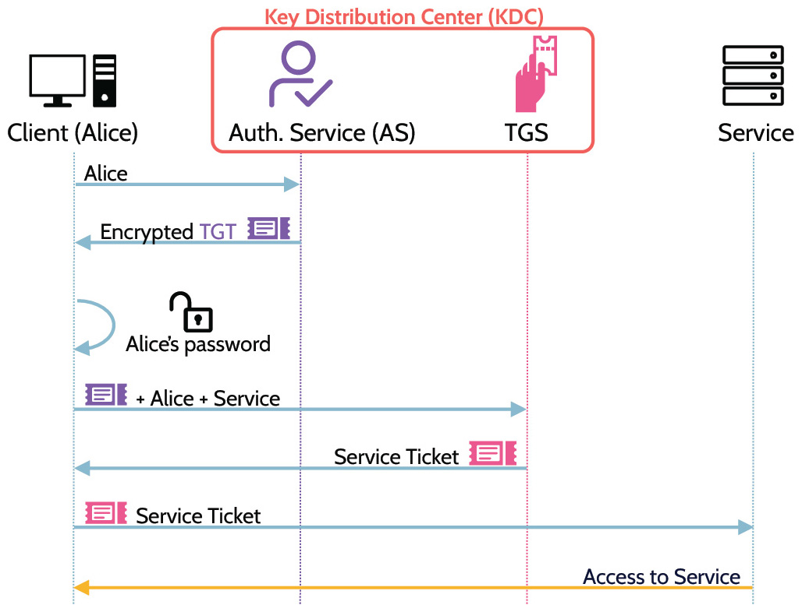
Figure 5-6: Kerberos Operation
This is a very incomplete description of all the various messages that are sent, the data they contain, and all the verification steps performed at each stage; however, it should provide a sufficient overview of the critical messages (TGT and Service Ticket), and the major services of Kerberos-the Authentication Service and the Ticket Granting Service-both of which are components within what is known as the Key Distribution Center (KDC).
Despite Kerberos's inherent strengths, including that it enables single sign-on, some significant disadvantages exist too. For one thing, Kerberos only supports symmetric encryption (e.g., RC4, DES, AES), which automatically implies symmetric key distribution challenges. For another, Kerberos only issues one major ticket, which is used to gain access to a system. As a result of using only one ticket, a system is vulnerable to a Time Of Check Time Of Use (TOCTOU) attack, which can be mitigated by increasing the frequency of authentication. In other words, to minimize the risk associated with a TOCTOU, or session-hijacking attack, users should be re-authenticated more frequently, especially if the system is a high-value system. Re-authentication means expiring the ticket, which means the user must login again. The point is this: for users accessing low-value systems all day, forcing them to re-login frequently, because of a high-value system in the environment, can create a significant burden and end-user resistance. In this scenario, it would be better to isolate the high-value system(s) and allow users to have longer-life-span tickets for the rest.
SESAME
Secure European System for Applications in a Multi-Vendor Environment, better known as SESAME, is an improved version of Kerberos. Like Kerberos, SESAME is a protocol for enabling single sign-on. Additionally, one of the big advantages of SESAME over Kerberos is that it supports symmetric and asymmetric cryptography, so it naturally solves the problem of key distribution, and it issues multiple tickets, which mitigates vulnerability to attacks like TOCTOU.
Even though SESAME is a better protocol, Kerberos is by far the more prevalent, because it's built into many prevalent systems including the Windows operating systems, MacOS, and various Linux and Unix distros. Remember that to use Kerberos in a Windows environment, Active Directory must be enabled.
5.2.9 CAPTCHA
CORE CONCEPTS |
|
|
Understand what CAPTCHA is and why it is most often used
When accessing a website, vendors often employ the use of what is known as Completely Automated Public Turing test to tell Computers and Humans Apart (CAPTCHA) as a security measure to protect against automated account creation and to protect users from spam and brute-force password decryption attacks. CAPTCHA works by asking a user to complete a simple test to prove they're human and not a robot or automated program trying to access or break into a protected account or area of a website. In its simplest form, CAPTCHA works by presenting a website visitor with an image of distorted letters and numbers and asking the user to type those letters and numbers into an empty field on the page. If the information is typed in correctly, the visitor gains access to the protected area; if not, the visitor is typically given another opportunity to do so. Bottom line: CAPTCHA is used to prevent bots from creating multiple accounts on systems, spam, and unauthorized access.
5.2.10 Session Management
CORE CONCEPTS |
|
|
|
|
Session management refers to sessions, and a session is what's created as the result of a successful user identification, authentication, and authorization process as shown in Figure 5-7. Upon a user being authorized by a system, a session is created, and the session represents the connection and interaction between the user and the system. Until the user logs out-manually or automatically-a session remains intact. Session management is focused on managing sessions effectively and securely for the entire duration.
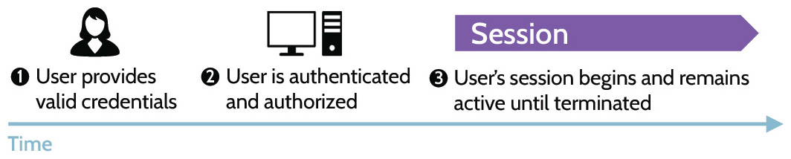
Figure 5-7: User Successful Authentication
Session Hijacking
What is session hijacking?
Session management is very important, because without it a major risk exists: session hijacking (shown in Figure 5-8). In other words, through simple carelessness or sophisticated technical means, somebody other than a legitimate user could gain access to a session and use it for malicious purposes. The preventive measure for session hijacking is session termination, which is an important component of session management.
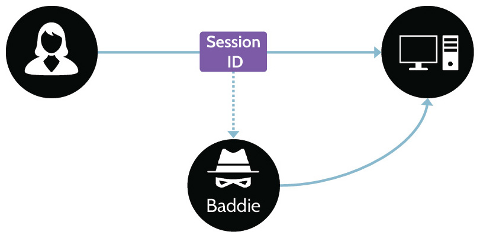
Figure 5-8: Session Hijacking
How do you prevent session hijacking?
How can session hijacking be prevented?
As noted, session hijacking can be mitigated through session termination, and several major ways exist to terminate a session. The primary and best way to prevent session hijacking is through frequent re-authentication. Many VPN solutions include continuous re-authentication as part of their security package. Session encryption keys are established at the beginning of a VPN session and then re-established in the background at certain time intervals. Additionally, a user is continually re-authenticated by the system in a manner that is transparent to the user. That makes it much more difficult for an attacker to compromise a user's active session.
Session Termination
In addition to continuous authentication, other major ways to terminate a session are outlined in Table 5-14.
|
Schedule Limitations |
Schedule limitations refers to a system administrative control that logs all users out of a system at a set time, for example, at 5 p.m. every evening, or perhaps the system does not allow logins during a weekend. |
|
Login Limitation |
Login limitation refers to preventing more than one simultaneous login using the same user ID. In other words, an account may not be shared and used at the same time by different people (or even the same person). |
|
Time-outs |
If there's inactivity, or after a set period of time, a session expires (it's timed out). |
|
Screensavers |
Screensavers are another popular session-management tool. After a screensaver pops up on a computer, typically the only way to gain access is through re-authentication. |
Table 5-14: Session Termination Methods
5.2.11 Registration and Proofing of Identity
CORE CONCEPTS |
|
|
What is identity proofing, and when does it take place?
Identity proofing, also sometimes called registration, is simply the process of confirming or establishing that somebody is who they claim to be before they are given access to a valuable resource or asset. Remember, for example, what happens before a certificate authority (CA) issues a digital certificate to somebody.
The registration authority (RA) proofs the identity of the certificate applicant. Similarly, prior to beginning employment and issuing an employee badge, account credentials, etc., an organization will proof the identity of a new employee. Using some type of government issued ID, a driver's license, or other form of identification unique to an individual, the company will confirm that the person is who they claim to be.
5.2.12 Authenticator Assurance Levels (AAL)
CORE CONCEPTS |
|
|
Understand AAL ratings and elements of each
With regards to digital identities, the National Institute of Standards and Technology has produced a suite of documents that can be found here: https://pages.nist.gov/800-63-3/. One document, NIST SP 800-63B, entitled "Authentication and Lifecycle Management," contains information about the AAL levels, which has been summarized in Table 5-15.
AALs measure the robustness of the authentication process. The higher the number, the more robust the strength of the service provided.
|
AAL1 |
|
|
AAL2 |
|
|
AAL3 |
|
Table 5-15: AAL Levels
5.2.13 Federated Identity Management (FIM)
CORE CONCEPTS |
|
|
|
|
|
|
Understand the basis of Federated Identity Management (FIM) and the three components that make up any federated access system
In comparison to single sign-on (SSO), where a user authenticates one time and gains access to multiple systems in the context of an organization, federated identity management (FIM) allows a user to authenticate one time and gain access to multiple disparate systems. In other words, a user gains access to company-owned systems as well as systems outside of the organization's control.
Microsoft's Active Directory is one example of the type of system used within an organization to provide SSO services.
Let's take a closer look at federated identity management, sometimes referred to as federated access, through an example. When a person travels via airplane, they must go through a security checkpoint before proceeding to the departure gate. Passing through this checkpoint means the traveler is in a secure zone. After traveling to another location, the person is still in a secure zone, because the new airport trusts the security check that was performed at the original airport. This fact highlights one of the most important and foundational aspects of federal access-trust relationships between different entities. In this example, the two airports are owned and operated by different organizations, but they share a trust relationship.
Let's look at federated access in the context of the logical world. With many websites today, when creating an account, two or more options are often available. One option is to create an account using a unique username and password; another option is to create an account using an already existing Facebook, Google, or account from a similar platform. For this example, imagine a user prefers to use their Google account, and they want to create an account on Pinterest, but Google doesn't own it. So the user visits Pinterest, and they're given the option to create an account or log in with Google (among several choices). They choose to log in via Google, and a small window pops up asking them to provide their Google username and password. Google is authenticating the user, but because a trust relationship exists between Google and Pinterest, Pinterest is trusting the authentication being performed by Google. This is another, real-world example of federated access in the logical world.
With any federated access system, three major components exist as depicted in Figure 5-9. First is the user, also referred to as the principal. The user or principal is the person who wants to log in or access the system. Second is the identity provider. The identity provider is the entity that owns the identity and performs the authentication. In the example above, Google is the identity provider. Third is the relying party, sometimes called the service provider. In the example noted above, Pinterest is the relying party. Federated identity management-federated access-relies on a trust relationship between the three entities.
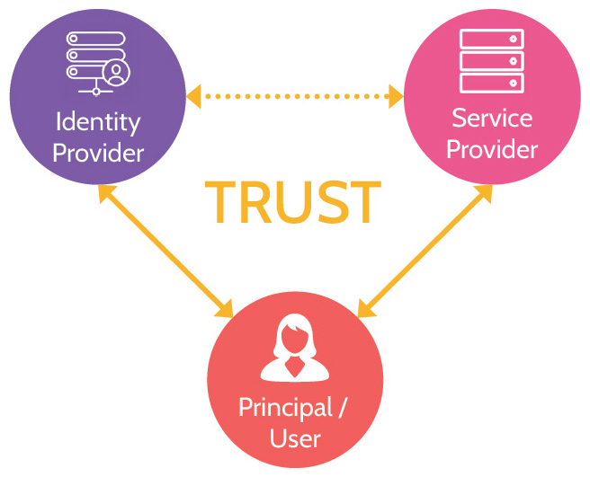
Figure 5-9: Federation Components
5.2.14 Federated Access Standards
CORE CONCEPTS |
|
|
|
|
Several major protocols enable federated access, with Security Assertion Markup Language (SAML) being one of the most important to understand. WS-Federation, OpenID, and OAuth are the others that should be known at a high level. Figure 5-10 depicts these four federated access standards and whether they provide authentication or authorization services or both.
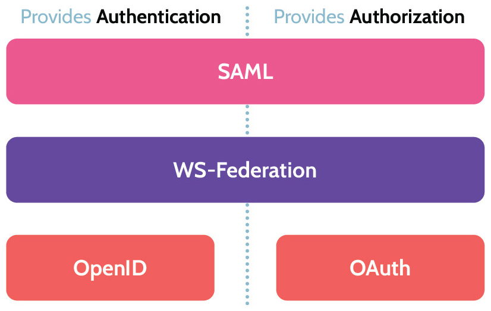
Figure 5-10: Federated Access Standards
WS-Federation (like SAML) offers authentication and authorization functionality. Like most federated access standards, the primary goal is enabling identity federation authentication and authorization. WS-Federation was created by a consortium of companies, including IBM, Microsoft, and Verisign, and it was codified as a standard by OASIS.
OpenID and OAuth are complementary protocols that often work together. OpenID provides the authentication component, and OAuth provides the authorization component to a federated access solution. In its simplest form, OpenID allows a user to use an existing account to identify and authenticate to multiple disparate resources-websites, systems, and so on-without the need to create new passwords for each resource. With OpenID, a user password is given only to the user's identity provider-Microsoft, for example-and the identity provider confirms the user's identity to sites the user visits. OAuth is the protocol or standard that allows users to gain access-to be authorized-to resources. Both OpenID and OAuth are open standards. While they can work independent of each other-especially OpenID-they're often deployed together, because of the richer functionality they provide as a unit.
Security Assertion Markup Language (SAML)
SAML's operation is depicted in Figure 5-11.
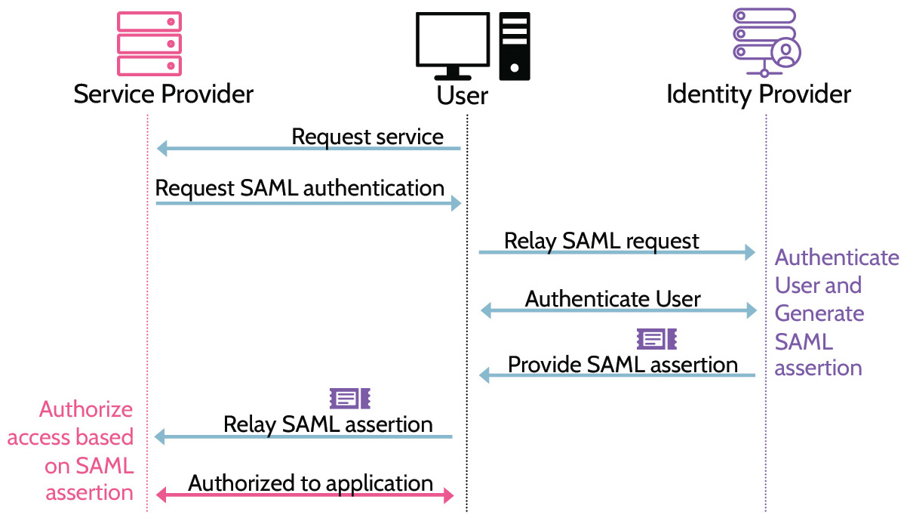
Figure 5-11: SAML Operation
Understand the importance of SAML & its relation to Federated Identity Management (FIM)
SAML provides two capabilities: authentication and authorization.
1. First, the user (principal) must authenticate via the identity provider. If the user is not logged in and requests access to a service (offered by the service provider), the request will get bounced to the identity provider, where the user can authenticate.
2. The identity provider will authenticate the user through the process of identification and authentication, at which point the user will be issued a SAML assertion ticket. One critical fact to note here: the SAML assertion ticket does not contain the username and password of the user. Rather, as the name suggests, the ticket contains assertion statements that the service provider-the relying party-can use for authorization purposes or to determine the level of authorization granted to the user.
3. Once the SAML assertion ticket is provided to the user, the user will pass it on to the service provider. The relying party is going to read the assertion statements contained within the SAML ticket and make an authorization decision. Similar to Kerberos, SAML uses tickets or tokens, usually denoted as SAML assertion tickets or tokens. The words are used interchangeably, and the critical thing to note is that assertions or statements about the user-username, role, level of access, etc.-are contained within them.
The four major components of SAML are summarized in Table 5-16.
|
Component |
Function |
|
Assertion |
Authentication, authorization, and other attributes |
|
Protocol |
Defines how entities request and respond to requests |
|
Bindings |
Mapping of SAML onto standard communication protocols (ex: HTTP) |
|
Profiles |
Define how SAML can be used for different business use cases (ex: Web SSO, LDAP, etc.) |
Table 5-16: SAML's Key Components
In addition to the above, it's important to remember two key characteristics of SAML.
SAML uses assertion tickets or tokens.
Assertions are written in a language called Extensible Markup Language (XML), which is a way of communicating in a manner that is machine and human-readable.
5.2.15 Accountability = Principle of Access Control
CORE CONCEPTS |
|
Understand what the phrase Principle of Access Control means; understand that accountability refers to the Principle of Access Control
The Principle of Access Control refers to accountability.
In order to achieve accountability, several things need to happen:
1. Users must be uniquely identified
2. Users must be properly authenticated
3. Users must be properly authorized
4. All actions should be logged and monitored
With all these components in place, then, and only then, can the Principle of Access Control be achieved.
5.2.16 Just-in-time (JIT) Access
CORE CONCEPTS |
|
|
The term "just-in-time" is often used in the context of just-in-time delivery, meaning an organization-a manufacturer, for example-receives components needed for production at the time production commences. One of the huge benefits of this type of arrangement is that the manufacturer can focus on what it does best and not need to worry about managing and storing inventory. If they know they're going to produce 100,000 widgets, they'll get enough components (and some extra, just in case) to produce those 100,000 widgets at the time needed.
Just-in-time access works in a similar fashion, albeit from a security perspective. Imagine a user that needs to access a sensitive part of a database once a month to run a report. At a high level, just-in-time access allows the user to gain elevated privileges during this monthly time window to run the report. Just-in-time access mitigates the need for long-term elevation of privileges, and the way it is set up and administered oftentimes allows for the access to be granted in an automated fashion versus a manual process. In other words, it minimizes potential security risks, and it does so in a manner that is efficient and effective.
5.3 Federated identity with a third-party service
5.3.1 Identity as a Service (IDaaS)
CORE CONCEPTS |
|
|
Understand the basic premise underlying Identity as a Service and why it might be used as well as associated risks
Identity as a Service (IDaaS) is the implementation or integration of identity services in a cloud-based environment. In other words, identification, authentication, authorization, accounting, and federated access all take place in the cloud. IDaaS has a variety of capabilities, which are:
Provisioning
Administration
Single Sign-on (SSO)
Multifactor authentication (MFA)
Directory Services
On premises and in the cloud
It also supports multiple types of identities/accounts as listed in Table 5-17.
|
Account Stored |
Authentication by |
|
Cloud Identity |
Created and managed in the cloud |
Cloud service |
|
Synced Identity |
Created and managed in local store (e.g., active directory) and synced/copied to cloud or vice versa |
Either local or cloud |
|
Linked Identities |
Two separate accounts which are linked. For example: one account in local store and second account in cloud service |
Either local or cloud |
|
Federated Identity |
Identity Provider |
Identity Provider |
Table 5-17: IDaaS Identities
Identity and Access Management Solutions
Identity and Access Management (IAM) solutions can use any of the three models listed in Table 5-18.
|
On Premise |
|
|
Cloud |
|
|
Hybrid |
|
Table 5-18: IAM Models
IDaaS Risks
Potential risks relating to IDaaS include the following:
Availability of the service: If the cloud service provider suffers an outage or the service is otherwise unavailable, the users will be unable to access systems.
Protection of critical identity data: PII and other sensitive data will be in the control of the cloud service provider. That means adequate protection of data is based on protection mechanisms the provider has available.
Entrusting a third party with sensitive or proprietary data: Based upon the identity data shared with the cloud service provider, other information about the organization might also be gained. Protections need to be in place to protect against this information from being leaked or shared with any unauthorized parties.
5.4 Implement and manage authorization mechanisms
CORE CONCEPTS |
|
|
|
|
|
|
Within the realm of authorization, a number of different philosophies and methodologies exist, and these can be broadly categorized as:
Discretionary
Mandatory
Non-discretionary
Each of these categories are analyzed in detail in the following section. They're also illustrated in Figure 5-12, while their main characteristics are listed in Table 5-19.
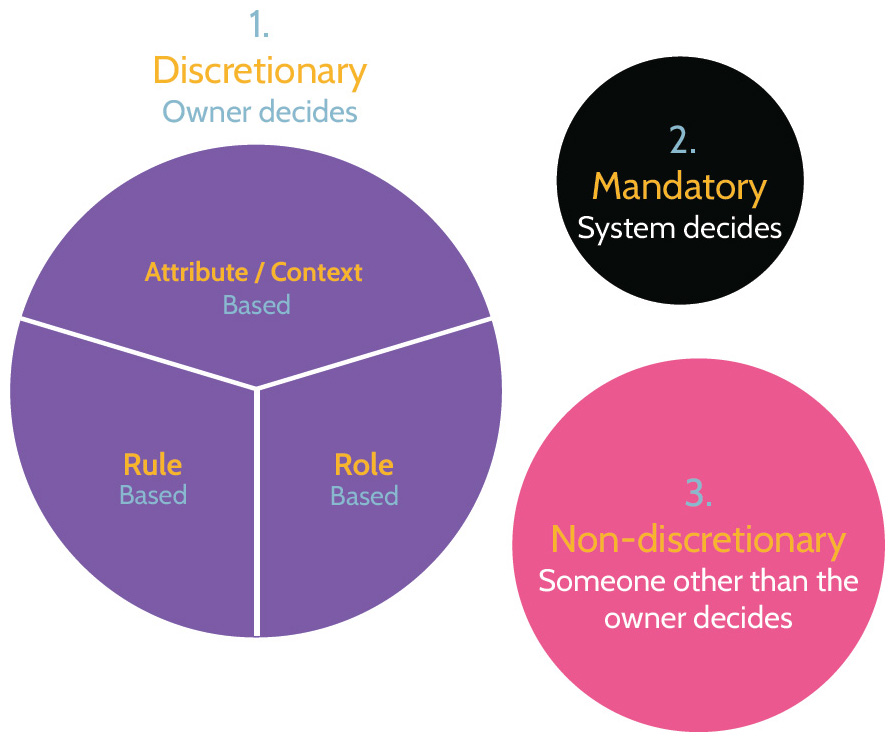
Figure 5-12: Access Control Types
Access Control Summary
|
Discretionary Access Control (DAC) |
|
|
Role-Based Access Control (RBAC) |
|
|
Rule-Based Access Control |
|
|
Attribute-Based Access Controls (ABAC) |
|
|
Mandatory Access Control (MAC) |
|
|
Risk-Based Access Control |
|
Table 5-19: Main Characteristics of Access Control Types
With this foundation, let's explore each of these authorization mechanisms further.
5.4.1 Discretionary Access Control (DAC)
CORE CONCEPTS |
|
|
Understand the premise of discretionary access control and the three primary types of DAC
Discretionary Access Control (DAC), as the word discretionary implies, means somebody determines who can access an asset. That somebody is the owner. The defining characteristic of DAC is that access is given, based upon the owner's discretion as also shown in Figure 5-13. That's considered a great security best practice, since owners are accountable for and are therefore in the best position to determine who should access those assets.
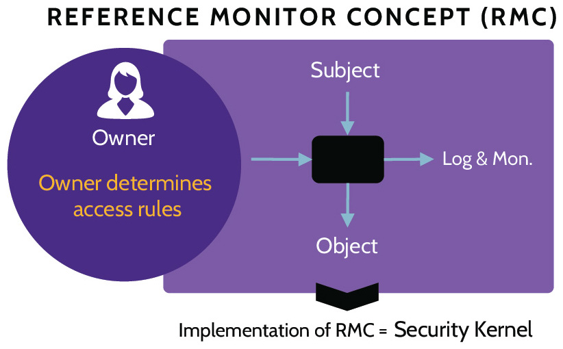
Figure 5-13: DAC Operation
Within the realm of discretionary access control, three primary types of DAC exist:
1. Rule-Based Access Control: Access to an object by a given subject is based upon one or more rules, determined by the owner.
2. Role-Based Access Control (RBAC): Access to an object by a given subject is based upon the role, or job function, and related authorizations needed to perform duties.
3. Attribute-Based Access Control: Access to an object by a subject is much more granularly controlled and based upon attributes, such as job function, type of device being used to access the object, time of day, classification of the asset, and so on.
Understand primary types of discretionary access control and their differences, why each might be used, and pros and cons of each
Rule-Based Access Control
Rule-based access control is simply a set of rules assigned to users. Look at Table 5-20. The ruleset governs access to the numerous objects. As such, if a subject requires access to an object, a rule will be present to allow or deny that. For example, there's a rule in place to only allow Alice read access to Bob's directory and nothing more while she has both read and write access to her home directory.
|
User |
Resource |
Read |
Write |
Execute |
|
Alice |
24th floor printer |
|
|
|
|
Alice |
Alice's home directory |
|
|
|
|
Alice |
Bob's home directory |
|
|
|
|
Alice |
Historical finance data |
|
|
|
|
Alice |
Finance database |
|
|
|
|
Alice |
CRM |
|
|
|
|
Bob |
24th floor printer |
|
|
|
|
Bob |
Bob's home directory |
|
|
|
|
Bob |
Marketing data |
|
|
|
|
Malory |
Alice's home directory |
|
|
|
|
Malory |
Bob's home directory |
|
|
|
Table 5-20: Rule-Based Access Control
Note that while rule-based access control offers much more granular control, it also requires much more administrative effort.
Role-Based Access (RBAC)
With role-based access control, users can be assigned to one or more roles and access is determined by a given role. The significant advantage gained by role-based access control is simplified and more manageable user and permissions administration. Instead of managing permissions at the user level, only permissions at the role level need to be considered, and then users with appropriate needs simply need to be assigned to the role or roles. Typically, RBAC roles will mirror the structure or organizational chart of an organization and, based upon this fact, the use of RBAC is often considered a "best practice." For example, in an organization with five hundred people who provide call center services, access needs are likely the same for each person. The use of RBAC in this case can eliminate much redundant and administrative overhead. Contrarily, in a more complex environment, where many more roles and cross-functional needs exist, an organization could easily end up with more roles than users and therefore much more complex RBAC needs.
Figure 5-14 shows an RBAC operation example, but the primary point to take away from this is that RBAC provides the ability to assign privileges to users with minimal administrative overhead.
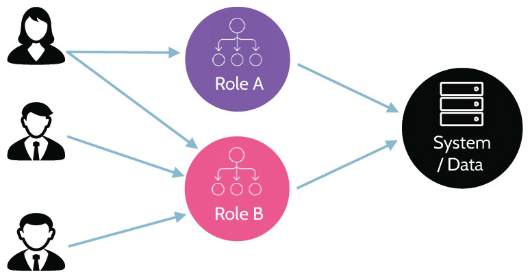
Figure 5-14: RBAC Operation
Implementing Full-RBAC across an entire organization is often very difficult and counterproductive. One of the main reasons to implement RBAC is to reduce access administration burden. When Full-RBAC is implemented across an entire organization for every system, it is common to end up with more roles than employees. Hence, Full-RBAC may increase the access administration burden.
This is one of the reasons most organizations implement Limited or Hybrid-RBAC, depicted in Figure 5-15.
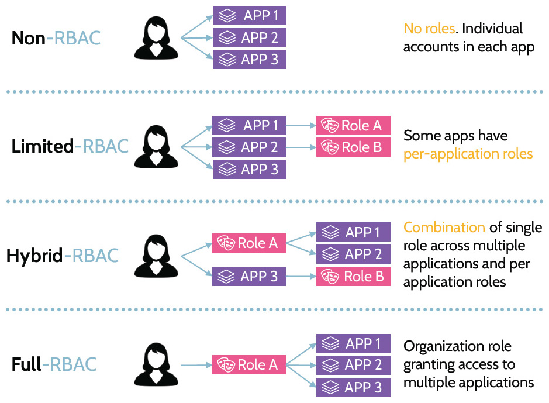
Figure 5-15: Different RBAC Models
Attribute/Context-Based Access Control
Attribute- or context-based access control is interesting and becoming quite prevalent. The premise behind the increased usage of attribute-based access control is the need to do a better job of authenticating user access with regards to the cloud, as most cloud-based applications are web applications. One of the defining characteristics of cloud computing is broad network access, which implies the ability to access cloud applications from anywhere with any type of device. If a company develops a web-based application and hosts it in the public cloud, is it protected by the corporate firewall and hidden inside the corporate network? No, it's on the public internet and potentially accessible by anybody. Because of this fact and because so many companies are moving to the cloud and hosting important applications there, the need for better authentication and authorization to those applications is imperative. ABAC's operation is shown in Figure 5-16, where a user needs to access a particular resource, and for that to happen, the authorization engine has to check the policy and match that against a variety of attributes that relate to the user and their environment.
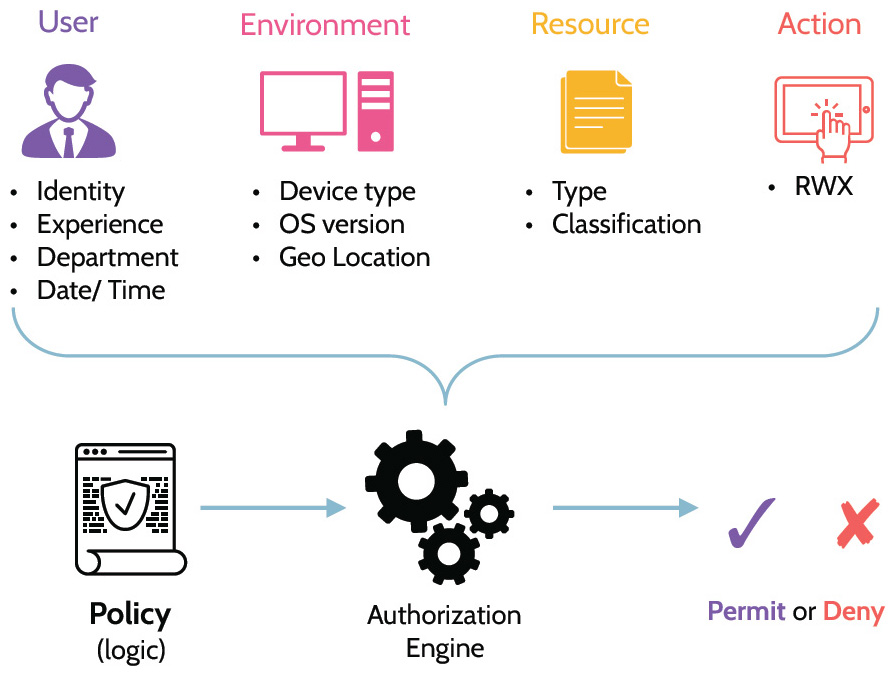
Figure 5-16: ABAC Operation
eXtensible Access Control Markup Language (XACML)
Understand the purpose of XACML
One of the tools that defines and enables attribute-based access control is a standard known as eXtensible Access Control Markup Language-XACML. This standard defines an attribute-based access control policy language, architecture, and processing model that allows attribute-based access to be implemented and utilized in a standardized manner.
Risk-Based Access Control
Risk-based access control looks at elements of a user connection, like the IP address, time of access request and more, to determine a risk profile associated with the request. Based upon the result, further authentication challenges may be presented to the user before access is granted.
5.4.2 Mandatory Access Control (MAC)
CORE CONCEPTS |
|
|
|
Understand defining characteristics of mandatory access control and where and why it is typically used
The key distinguishing feature of MAC (depicted in Figure 5-17) is that access is determined by a system, and most MAC systems are designed to protect confidentiality related to assets and information. The system itself makes access control decisions, based upon the classification of the objects being accessed and the clearance of the subject requesting access. In a MAC environment, every single object should be classified with a specific classification label, e.g., public, secret, top secret, and so on. Correspondingly, all users should have a security clearance that aligns with the classification system used for objects. Within this framework, access will then be granted or denied accordingly. For example, if a user with "Public" clearance attempts to access an object that is classified as "Secret," the system will deny the request. Note that MAC isn't often implemented in private companies because in a typical organization it's very rare to find employees with clearly defined levels of clearance and every asset with a clearly defined classification level. This explains why one or a combination of the previously discussed access control systems is used. However, in the context of government (specifically the military), MAC might be easily used. Even here, though, it's not a given.
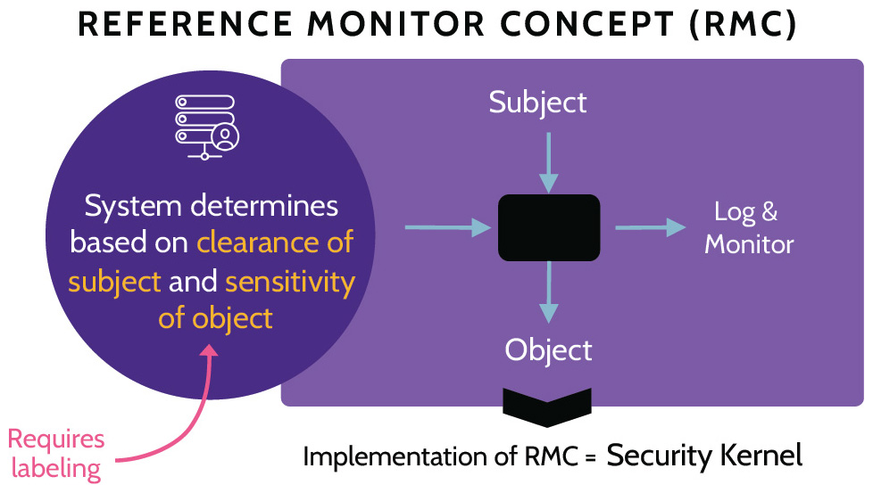
Figure 5-17: MAC Operation
5.4.3 Non-discretionary Access Control
CORE CONCEPTS |
|
|
Contrary to Discretionary Access Control (DAC) is Non-discretionary Access Control (depicted in Figure 5-18). If DAC means the owner decides who can access an asset, Non-discretionary Access Control means someone other than the owner determines access. Although this isn't a security best practice, it's an existing working practice in many companies and leads to someone in the IT department, for example, creating a user account and granting access to numerous assets, whether access is needed or not. One reason is that an identified owner does not exist for a system; therefore, Discretionary Access Control can never be exercised. Additionally, situations may exist where the owner (accountable) delegates responsibility of access control to areas like IT, but then the owner doesn't offer input with regards to who should be given access. Rather, that's left up to the IT folks and therefore is another example of Non-discretionary Access Control being exercised.
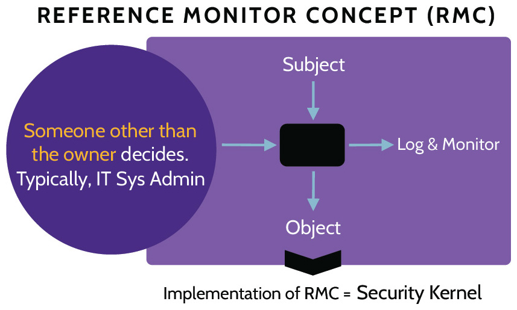
Figure 5-18: Non-discretionary Access Control
5.4.4 Access Policy Enforcement
There are two critical aspects for access policy enforcement in an application, A policy enforcement point (PEP) and a policy decision point (PDP). The definitions are listed in Table 5-21.
|
Policy enforcement point (PEP) |
PEPs are parts of an application that receive authorization requests for protected systems and data. They function as gatekeepers and send the requests to the PDP where they are evaluated. When the PDP sends back the decision, the PEP enforces it by either granting or denying access. They are placed throughout an application's access points. |
|
Policy decision point (PDP) |
PDPs make decisions on the authorization requests that have been sent to them by PEPs. They make decisions based upon pre-defined rules and are generally centralized. |
Table 5-21: PEP vs. PDP.P
5.5 Manage the identity and access provisioning life cycle
5.5.1 Vendor Access
CORE CONCEPTS |
|
|
With any organization, certain functions and critical relationships require vendor access to some systems and data. Outsourced functions and relationships can vary and might include things like IT services, marketing, finance and accounting, and supply chain suppliers, to name a few. As a result, third-party vendor relationships can represent significant risk to an organization, and identity and access provisioning for these relationships should be considered with as much or more care as identity and access provisioning for employees. In addition to normal provisioning, review and revocation activities, vendor access provisioning might include a security review of the vendor or even an onsite inspection of the vendor's facilities and systems.
5.5.2 Identity Life Cycle
CORE CONCEPTS |
|
|
|
|
Understand the identity life cycle and what happens at each stage
The Identity Life Cycle is simple in concept and refers to the creation or provisioning of user access, the periodic review of that access, and eventually the revocation of that access. The three steps of the Identity Life Cycle are depicted in Figure 5-19.
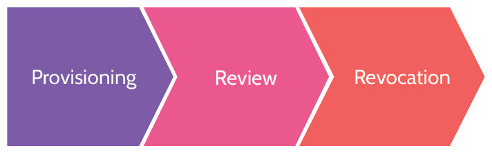
Figure 5-19: Identity Life Cycle
Provisioning activities include things like background checks, confirming skills, and identity proofing, among other things.
Periodically, this access should be reviewed to ensure continued appropriate access. Assets and systems to which a user has access should be reviewed by the asset or system owner to determine if ongoing access is necessary or if access should be modified. Timeliness of access reviews is dependent on a few variables, the most important being as often as necessary, based upon the value of the asset or system in question. Different assets and systems have different values to an organization and different risk profiles. This fact ultimately drives the need for more frequent or less frequent access reviews. Additionally, different types of user and system accounts also drive the timing of access reviews. High value accounts-system/admin/root-should be reviewed much more frequently than lower value accounts.
Eventually, and when necessary, an account should be revoked, or deprovisioned. Revocation typically takes place when an employee leaves the organization, through voluntary or involuntary separation, but it can also take place when an employee changes roles. This is very important to note. Otherwise, if an employee changes roles, they may gain additional privileges and rights as well as maintain existing privileges and rights, which can lead to increase in actual appropriate access. So, sometimes it is appropriate to revoke access for an employee and provision again, based upon new needs as set forth by the appropriate asset and system owners.
5.5.3 User Access Review
CORE CONCEPTS |
|
|
|
Why access reviews should be conducted?
Once an account has been registered for a user, and the user is granted access to facilities, systems, and other resources, that doesn't mean that the access should remain forever. All user access should be reviewed on a periodic basis by the owner of the asset, because the owner is in the best position to conduct this review and confirm that continued user access is appropriate. Additionally, user access reviews can mitigate access or privilege creep.
How often should access reviews be performed?
How often should access reviews be conducted?
The fact that user access should be reviewed at least annually raises additional questions. What about if a user changes role, leaves the company, or you're concerned about admin or "super user" roles? How often should reviews take place in these cases?
In the case of a user changing roles, their access should be reviewed at the time of the change. New access should be granted, as needed, and any access that is not needed should be removed. Of course, access should always be reviewed and approved by the owner. When someone leaves the company (through voluntary or involuntary termination) that user's access should be reviewed, and in most cases, all access should be removed. In the case of administrative and "super user" accounts, because they grant broader and more powerful access, access might need to be reviewed more frequently than annually; perhaps these reviews should occur as often as weekly.
Which accounts should be reviewed most frequently?
In every case, the value of the resources and the associated risks should drive access review timing. As noted above, it might be fine to review some user access annually, while other reviews might need to take place more frequently.
5.5.4 Privilege Escalation (e.g., use of sudo, auditing its use)
In addition to more frequent reviews of privileged accounts, a recommended security practice is for system administrators (users with admin, root, and similar privileges) to only use their privileged accounts when strictly necessary.
Privileged users should utilize two accounts. They should use a standard user account for regular business purposes, such as checking email, participating in meetings, etc., and they should use a separate account with elevated privileges only when performing administrative tasks that require a higher level of access. A good example of this approach on Unix/Linux systems is the command sudo ("superuser do") which is similar to the Windows RunAs command. An administrator can use a standard user account when logged into a system and only run specific commands or programs that require elevated privileges with the sudo command.
This way, when an administrator is performing activities that are most likely to compromise their account, such as checking email, browsing the web, etc., they are using their standard user account. The likelihood of their privileged account being compromised and used for malicious purposes is greatly reduced.
5.5.5 Service Account Management
CORE CONCEPTS |
|
|
Service accounts are accounts that are used by services, workloads or applications. Service account management involves setting up, configuring, monitoring and maintaining these service accounts. Even though people don't use service accounts, human oversight must be in place to ensure that the accounts are appropriately secured. Otherwise, the accounts could be utilized for things like privilege escalation and spoofing. Best practices include limiting service accounts to single purposes and reducing their privileges to the minimum that is required to function effectively.
5.6 Implement authentication systems
5.6.1 Authentication Systems
CORE CONCEPTS |
|
|
As has been previously discussed, the implementation of authentication systems helps protect an organization, its users, and its critical assets from unauthorized access. At its core, authentication is the act of proving, or verifying, an identity or system assertion.
A number of authentication systems exist, and some of the more popular ones include:
OpenID Connect (OIDC)/Open Authorization (OAuth)
Security Assertion Markup Language (SAML)
Kerberos
Remote Authentication Dial-In User Service (RADIUS) and Terminal Access Controller Access Control System Plus (TACACS+)
RADIUS, TACACS+, SAML, and Kerberos were both discussed in this chapter and in Domain 3. OIDC and OAuth are briefly discussed below:
OpenID Connect (OIDC)/Open Authorization (OAuth)-OAuth is an access delegation standard that target applications can use to provide client applications with secure delegated access over HTTPS. It authorizes devices, APIs, servers, and applications with access tokens rather than credentials. OpenID Connect (OIDC) is an identity layer built on top of the OAuth 2.0 framework. It allows third-party applications to verify the identity of the end user and to obtain basic user profile information. While OAuth 2.0 is about resource access and sharing, OIDC is about user authentication.
 MINDMAP REVIEW VIDEOS
MINDMAP REVIEW VIDEOS
 CISSP PRACTICE QUESTION APP
CISSP PRACTICE QUESTION APP
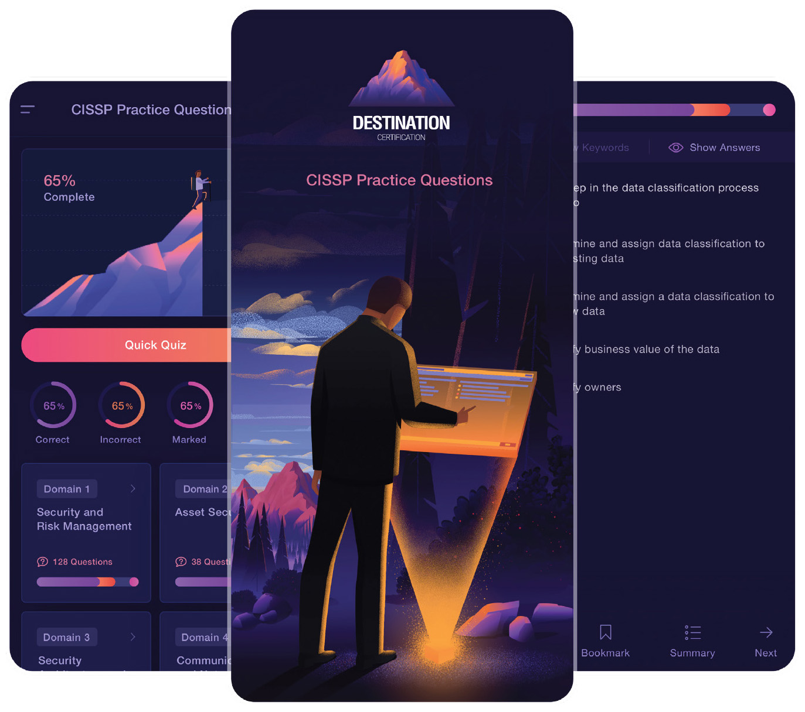
Download the Destination CISSP Practice Question app for Domain 5 practice questions